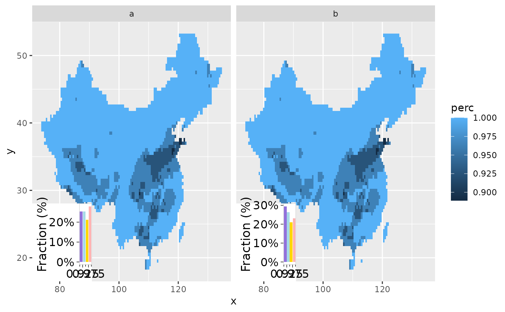

geom_annotation_func.Rdgeom_annotation
other parameters to plot.fun
## make plot
library(ggplot2)
d <- data.frame(x = 1:3, y = 1:3,
varname = c("T_min", "T_max", "T_avg"))
p = ggplot(d, aes(x, y)) +
geom_point() +
geom_richtext(aes(label = varname), x = 2, y = 2) +
facet_wrap(~varname, labeller = label_mk) +
theme(
strip.text = element_markdown(face = "bold", margin = margin(t = 1, b = 0))
)
## make legend
brks = 1:5 %>% c(-Inf, ., Inf)
nbrk <- length(brks) - 1
cols <- rcolors::get_color("amwg256", nbrk)
g = make_colorbar(brks, col = cols, space = "right")
d_lgd = tibble(varname = d$varname, grob = rep(list(g), 3))
## add legend to each panel
p2 = p + geom_annotation(data = d_lgd, aes(grob = grob), xmin = 0.8, xmax = 1, ymax = 1)
p2
